1. RNN的其它应用
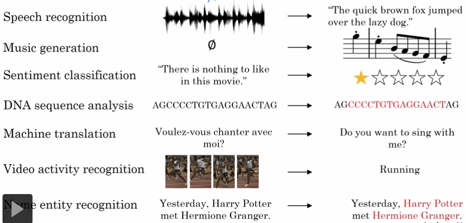
(1)Many to Many问题，且Tx = Ty
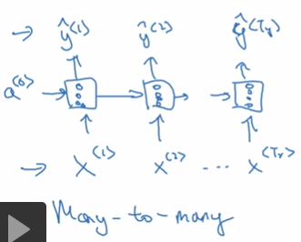
(2)Many to One问题，文本分类
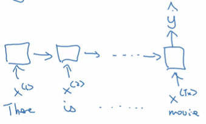
（3）One to Many问题，如Music生成
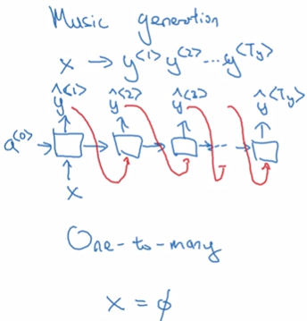
（4）Many to Many问题，且Tx <> Ty，例如机器翻译
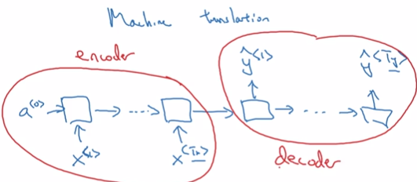
总结：
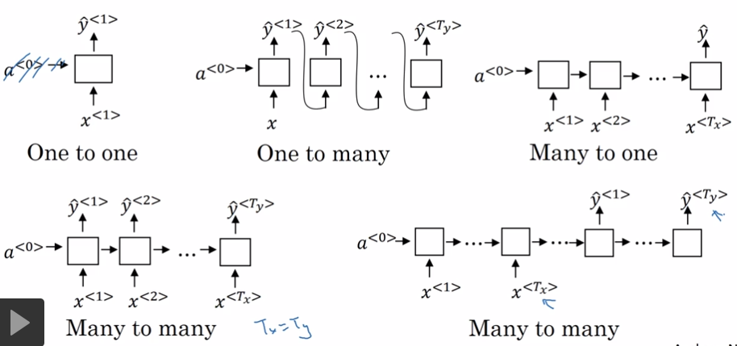
1.1. many to one
输入 vector sequence，输出：one vector
例如：
文件的情绪分析
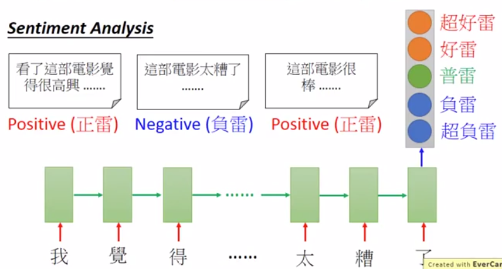
文本的关键词，30'00''
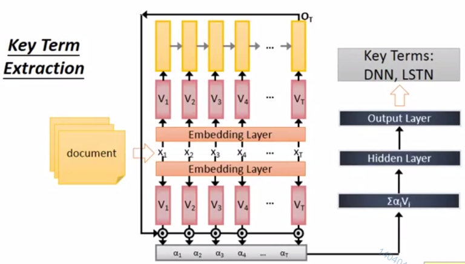
1.2. many to many，output is shorter
输入输出都是vector sequence，输出的sequence更短。
例如：语音辨识，输入声音信号，输出字符序列
- 将声音信号切成小段，每段不超过0.01s
- 把每一小段声音转成一个向量。
- 根据每个向量输出一个字符。
- 通常好个向量输出同一个字符，需要把重复的字符去掉。
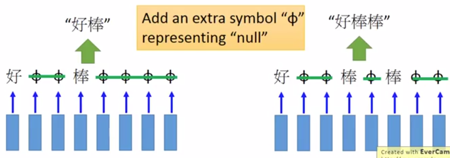
由于输入和输出的长度不同，不管训练还是预测，都会遇到一个问题。
训练时，多个向量输出同一个字符，如果把多余的字符去掉，但不会误伤叠词。
解决方法：增加一个为空的字符，只把为空的字符去掉。
预测时，某个向量的输出是真实字符还是空字符？
解决方法：CTC training，即穷举所有正确的可能。 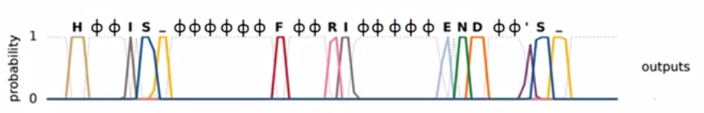
1.3. many to many, no limitation
输入和输出都是序列，不知道序列的长短。
应用1：语言翻译
训练方法：
- 每输入一个英文单词，输出一个中文字符。
- 英文序列停止了，但中文序列继续输出。
- 在中文字符中增加一个停止字符。
- 当输出为停止字符时，停止输出。
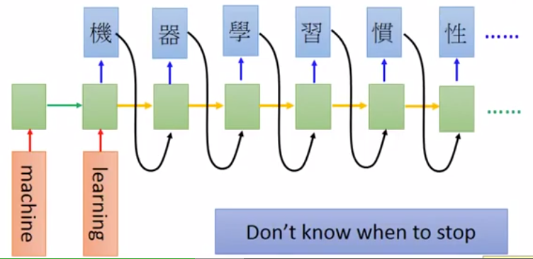
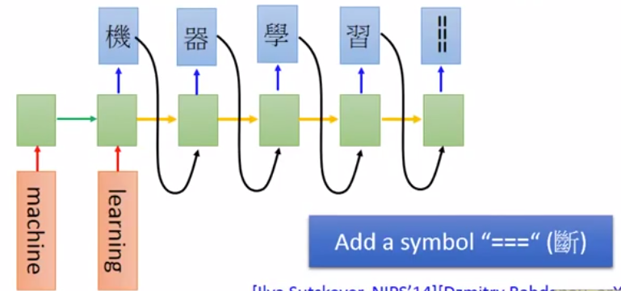
应用2：语言A的声音信号 -> 语言B的文字
不需要经过A的文字作为中间转换。
用于语言A没有对应的文字的场景。
1.4. Beyond Sequence
应用：句法分析树
输入：序列
输出：语言结构树
使用seq2seq，而不是struct learning
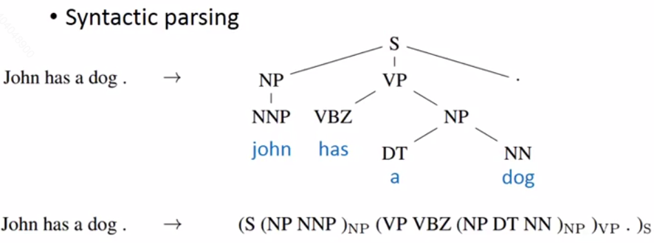
1.5. sequence to sequence, Auto-encoder
用在文字上
普通的encoder算法会忽略单词的顺序，因而影响句子的理解。
Auto-encoder算法会考虑单词的顺序。
单层模型：
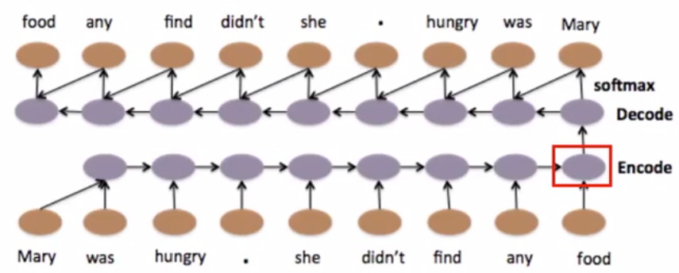
多层模型：
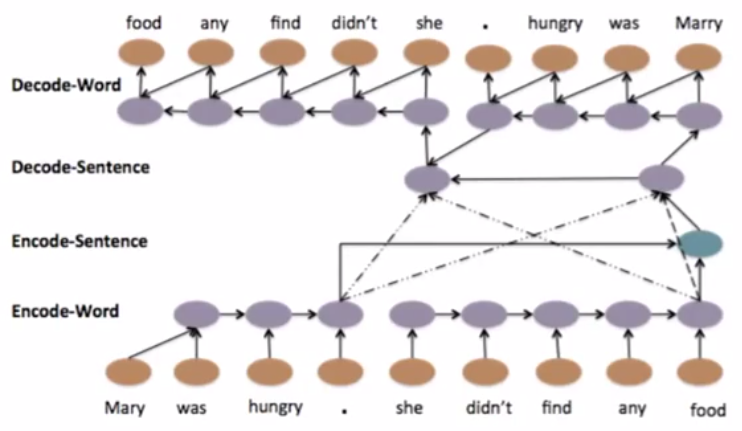用在语音上
把长度不固定的语音片段转成长度固定的向量。
用处：语音搜索
问：怎样把语音变成向量？
答：encoder技术
问：怎样比较？
答：
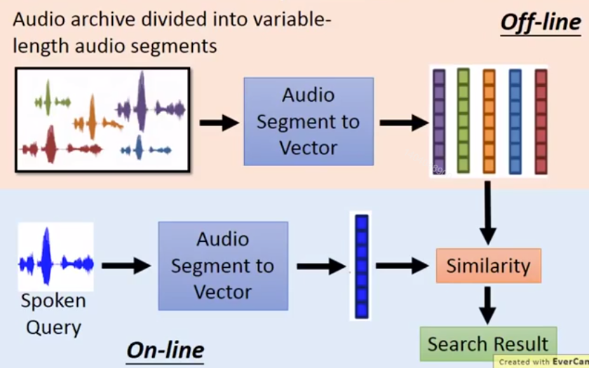
通常把encoder和decoder一起训练
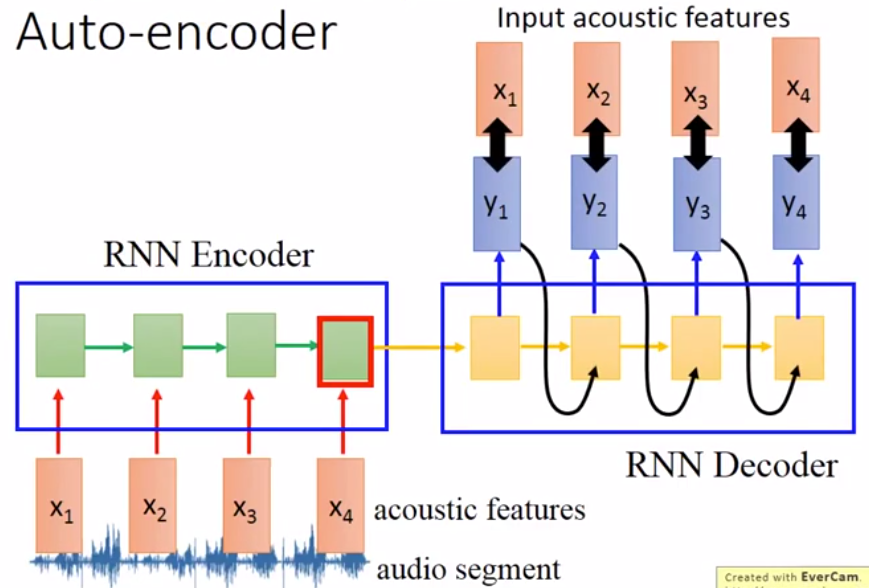